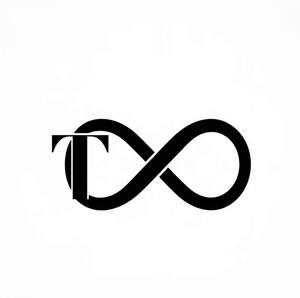

Trade Mark Journal No.2025/033 15 August 2025
UK00004244727 5 August 2025 (14,18,20,21,26,28)

- Class 14
- Jewellery; bracelets; necklaces; rings; earrings; anklets; brooches; charms for jewellery; lockets; pendants; chokers; bangles; cufflinks; tie pins; tie clips; body jewellery; key rings of precious metal; chains of precious metal; watches; wristwatches; watch straps; watch bands; jewellery boxes of precious metal.
- Class 18
- Leather pet collars; synthetic pet collars; leather pet leads; synthetic pet leads; pet harnesses; pet clothing; pet coats; pet travel bags; pet carrier bags; pet slings; collars for animals; leashes for animals; harnesses for animals; muzzles for dogs; covers for animals; leads for animals; backpacks for pets; saddlery for pets.
- Class 20
- Pet beds; cushions for pets; pet crates (non-metal); indoor kennels (non-metal); portable kennels (non-metal); pet houses (non-metal); scratching posts for cats; pet furniture; nesting boxes for pets; pet feeding stations (non-metal); non-metal gates for pets; pet playpens (non-metal); ramps for pets (non-metal); stairs for pets (non-metal); dog kennels (non-metal); cat trees.
- Class 21
- Pet feeding bowls; pet water bowls; automatic pet feeders; automatic pet water dispensers; non-spill pet bowls; pet grooming brushes; combs for pets; pet feeding mats; scoops for pet food; litter scoops; litter trays; pet shampoo brushes; pet cleaning gloves; cages for household pets (not metal); toothbrushes for pets; water bottles for pets; containers for pet treats.
- Class 26
- Hair clips; hair bands; hair ties; hair bows; hair pins; barrettes; scrunchies; decorative ribbons; bows for gift wrapping; appliqués (haberdashery); brooches (clothing accessories); artificial flowers; artificial garlands; artificial wreaths; charms (not of precious metal) for shoes or hair; snap fasteners; hook and loop fasteners; buttons; zippers.
- Class 28
- Pet toys; chew toys for pets; balls for pets; interactive pet toys; plush toys for pets; squeaky toys for pets; tug toys for pets; rope toys for pets; frisbees for pets; treat-dispensing pet toys; agility equipment for pets; cat toys; scratching toys for cats; training toys for pets; puzzle toys for pets.
T Infinity LTD